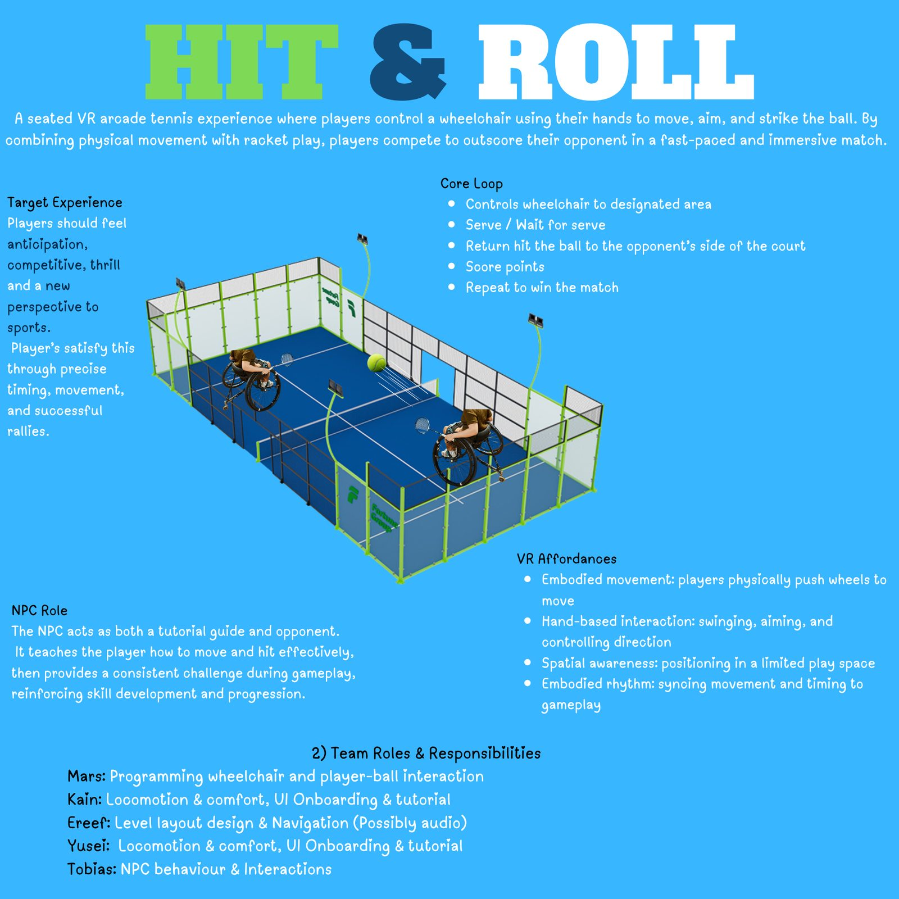
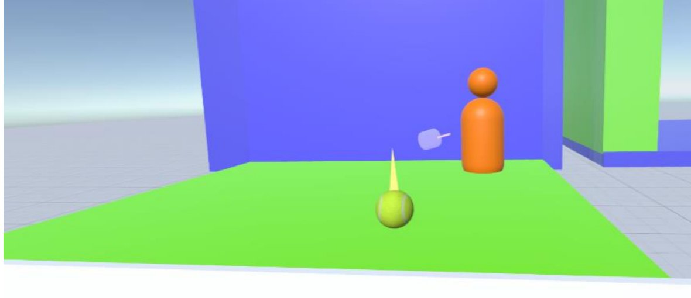
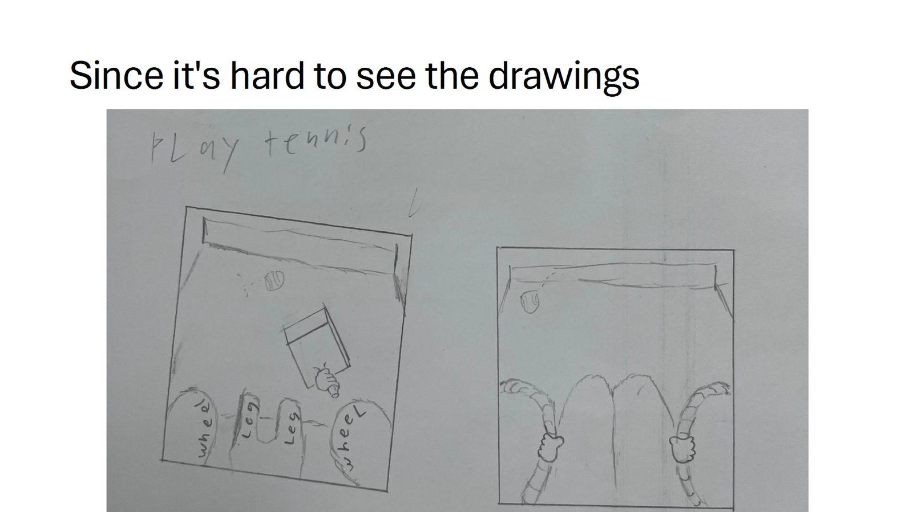
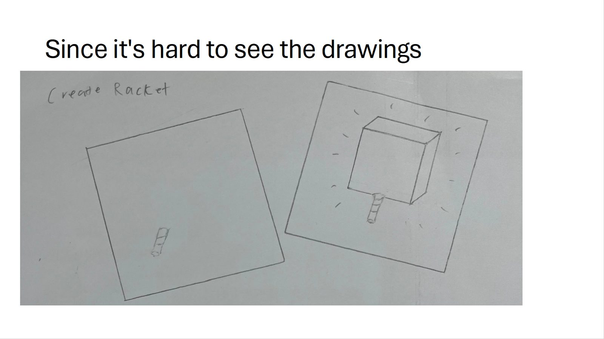
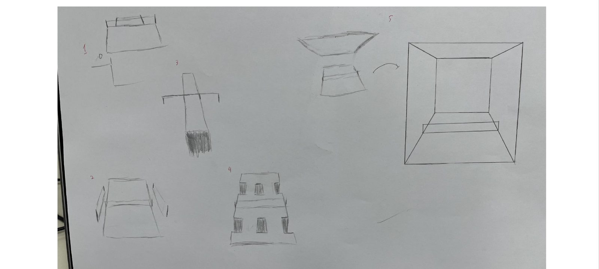

Deepspace CybercourtDeepspace Cybercourt
- ラケットのSFX実装(多層ヒット音、速度しきい値とクールダウン、3D空間オーディオ)
- VFX実装(スイートスポットのフラッシュ、ボールのトレイル、イベントごとに専用のパーティクル)
- コントローラー振動による接触フィードバック
- グリップ操作(持ち手)のコーディングと物理挙動の調整
- 3回のプレイテストをSFX/VFX観点で設計・実施し、課題表にまとめてチームへ共有
- Racket SFX — layered impact sounds, velocity threshold and cooldown, 3D spatial audio
- VFX — sweet-spot flash, ball trail, and a distinct particle effect per event type
- Controller vibration for contact feedback
- Grip-input coding and physics tuning on the racket
- Designed and ran three playtest rounds from an SFX/VFX perspective, feeding issue tables back to the team
座ったままラケットを振り、embodied rhythm(身体で刻むリズム)でAIと打ち合うVRスポーツです。当初は「HIT & ROLL」という企画名で、車椅子を手で漕いで動くVRテニスとして提案されましたが、指導教員のフィードバックと3回のプレイテストを経て、テレポート・ジャンプ移動を持つSF産業アリーナ「Deepspace Cybercourt」へと進化しました。
A seated VR sports game where players swing a racket and rally against an AI opponent through embodied rhythm. It began under the pitch name “HIT & ROLL,” a wheelchair-controlled VR tennis concept, then evolved — through supervisor feedback and three rounds of playtesting — into Deepspace Cybercourt, a sci-fi industrial arena with teleport and jump-based movement.
制作プロセスDesign Process
アイデアから完成までの流れです。各ステップの詳しい資料は「資料」セクションからご覧いただけます。
The flow from idea to finished game. Detailed materials for each step are available in the Documents section below.
-
01
アイデアIdea
VRテニスの企画に、移動モデルの見直しを求められました。
Our VR tennis pitch was flagged for its movement model.
企画フィードバックを見る →Read the concept feedback → -
02
企画Planning
車椅子移動をやめ、SF産業アリーナへ舞台を転換しました。
We dropped wheelchair movement for a sci-fi arena.
GDDの企画転換を見る →Read the pivot in the GDD → -
03
試作・検証Prototype & Testing
3回のプレイテストでSFX/VFXを主導し、バグを解決しました。
I led SFX/VFX across three playtests, fixing bugs.
SFX/VFXプレイテスト記録を見る →Read the SFX/VFX playtesting notes → -
04
完成Ship
トレイルVFXを追加し、コートを開けた設計にしました。
We added a trail VFX and opened up the court design.
スクリーンショットを見る →See the screenshots →
資料Documents
企画の出発点から、企画転換、プレイテストによる作り直しまでを、実際に使った資料でたどれます。
From the original pitch through the pivot and the playtest-driven rework, traced through the actual documents used at each stage.
企画フィードバック&一枚企画書Concept Feedback & One-Pagers
「Tennis Go Round」の一枚企画書と、指導教員からの詳細なフィードバックです。移動モデルやNPCの役割を問う質問が、後の企画転換の出発点になりました。
The one-page “Tennis Go Round” pitch and the detailed supervisor feedback it received — the questions about the movement model and the NPC's role became the starting point for the later pivot.
資料を読む →Read document →Final Design Implementation DocumentFinal Design Implementation Document
最終提出したGDDです。プロトタイプの実装内容、企画転換の詳細な比較表、3回のプレイテストの総括、教員フィードバックへの対応をまとめています。
The final submitted GDD, covering the prototype implementation, a detailed comparison table of the concept pivot, a summary of all three playtesting rounds, and the team's response to staff feedback.
資料を読む →Read document →SFX/VFXプレイテスト記録SFX/VFX Playtesting Notes
私が担当した3回分のプレイテスト記録です。エフェクトの使い回し、打った実感の不足、足音バグの特定と修正まで、実際の指摘とその対応をそのまま残しています。
My own playtesting reports across all three rounds — including the raw issue tables — from reused VFX, to the missing sense of contact, to identifying and fixing a footstep-sound bug.
資料を読む →Read document →制作の背景・工夫した点Background & Design Decisions
企画の背景Project Background
最初の企画は「車椅子で移動しながらテニスをする」という強いフックを持っていましたが、指導教員から「実在する競技を題材にする以上、車椅子を目新しさとして消費してはいけない」と釘を刺されました。この指摘は、単なる技術的な難易度の話ではなく、題材への向き合い方そのものを問うものでした。開発期間内に安定して動く移動システムを作れないという判断と合わせて、私たちは車椅子という要素そのものを手放し、embodied rhythm(身体を使う心地よさ)という核だけを残してSFアリーナへ舞台を移しました。
The original pitch had a strong hook — VR tennis played from a wheelchair — but our supervisor's feedback was direct: since the game was built around a real assistive device, we could not treat the chair as mere novelty. That wasn't only a technical note; it questioned how we were framing the subject itself. Combined with the judgement that we couldn't reliably ship a stable wheelchair-locomotion system in the timeframe, we let go of the wheelchair element entirely and kept only its core — the satisfaction of embodied rhythm — moving the setting to a sci-fi arena instead.
工夫した点Design Decisions
私が繰り返し直面したのは「プレイヤーは打った瞬間を体感できているか」という一点でした。1回目のプレイテストでは全てのエフェクトが同じに見えると言われ、2回目では「打った実感がない」という一番重い指摘を受けました。そこで、音とエフェクトを1イベント=1表現に固定するというルールを立て、ヒット音を多層化し、ラケットのスイートスポットに光るVFXを追加し、コントローラーの振動も組み合わせました。3回目のプレイテストで見つかった「手を動かしただけで足音が鳴る」というバグは、足音のロジックがコントローラー入力ではなくプレイヤーの実移動(頭・体の並進)に紐づいていなかったことが原因で、スクリプトをメインカメラ側に移すことで解決しています。
The question I kept coming back to was simple: does the player actually feel the moment of contact? Round 1 playtesting found every effect looked the same; round 2 raised the heaviest note — no real sense of having hit the ball. I responded by fixing a rule: one sound and one visual per event, no reuse. I layered the impact SFX, added a sweet-spot VFX flash on the racket head, and combined it with controller vibration. A bug found in round 3 — footstep sounds firing from hand movement alone — turned out to be footstep logic driven by controller input rather than the player's actual head/body translation; moving the script onto the main camera fixed it.
学んだこと・今後の課題Lessons Learned & Next Steps
最も学びが大きかったのは、フィードバックのバグではなく「実装のどこにバグがあるか」を仕様の観点から突き止める作業でした。足音が鳴る原因を「コントローラー入力に紐づいていたから」まで特定できたのは、SFXを単なる装飾ではなく、プレイヤーの状態を表すシステムとして設計していたからです。今後は、エフェクトの持続時間や強度を数値化し、プレイテストのたびに勘ではなく計測で調整できる仕組みを作りたいです。
The biggest lesson wasn't fixing a feedback bug so much as tracing it back to a specification-level cause. Being able to say precisely why the footstep sound fired — because it was wired to controller input rather than player state — only worked because I had designed SFX as a system representing player state, not as decoration. Next, I'd like to quantify effect duration and intensity so each playtesting round can be tuned by measurement rather than by feel.
スクリーンショットScreenshots
私が担当したのは、ラケットのSFX/VFX・振動・物理挙動・グリップ操作です。アリーナの3Dモデルと環境アートはチームの他メンバーが制作しました。
My work here is the racket's SFX/VFX, vibration, physics, and grip input. The arena's 3D models and environment art were created by other members of the team.






チーム・クレジットTeam & Credits
IGB388 Team 15(4人チーム)
プラットフォーム:Meta Quest 2
エンジン:Unity 6
IGB388 Team 15 — Four-Person Team
Platform: Meta Quest 2
Engine: Unity 6
- Yusei Nakajima オーディオデザイン / SFX・VFX実装 / ハプティックフィードバック / ラケットの物理挙動 / グリップ操作 / プレイテスト設計 Audio Design / SFX and VFX Implementation / Haptic Feedback / Racket Physics / Grip Interaction / Playtest Design
- Team Member 1 初期コンセプト設計(「Tennis Go Round」) / ゲームデザイン / レベルデザイン / GDD執筆 / プレイテスト Original Concept Design (“Tennis Go Round”) / Game Design / Level Design / GDD Authoring / Playtesting
- Team Member 2 リードプログラミング / プロダクション / レベルデザイン / デバッグ / プレイテスト Lead Programming / Production / Level Design / Debugging / Playtesting
- Team Member 3 アセット選定 / プレイテスト Asset Sourcing / Playtesting
アリーナのモデル、環境アート、NPCシステムは、上記のチームメンバーが制作・実装しました。
The arena models, environment art, and NPC systems were created or implemented by the team members credited above.
外部アセット・ライセンスExternal Assets & Licences
-
Free Sport Balls — Unity Asset Store
プロジェクト内のスポーツボールモデルとして使用しました。
https://assetstore.unity.com/packages/3d/props/free-sport-balls-293937 Used for sports ball models in the project.
https://assetstore.unity.com/packages/3d/props/free-sport-balls-293937
この外部アセットは中島悠成が制作したものではありません。私の主な担当は、SFX・VFXの実装、コントローラー振動、ラケットの物理調整、グリップ操作、およびプレイテスト設計です。
This third-party asset was not created by Yusei Nakajima. My contributions focused on audio and visual effects implementation, haptic feedback, racket physics, grip interaction, and playtest design.